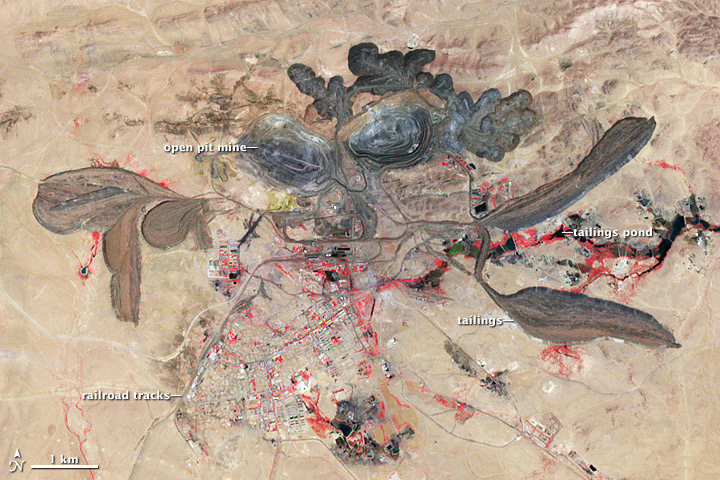

Geologia i zasoby złóż
Najważniejsza dana: 28.46 milionów ton krótkich rudy (rezerwy P&P) - "SRK Consulting (U.S.), Inc., an independent consulting firm, estimated total proven and probable reserves of 1.86 million short tons of REO contained in 28.46 million short tons of..." To właśnie przejście od geologii do potwierdzonej ekonomicznie rezerwy decyduje, czy projekt może tworzyć wartość dla akcjonariuszy. 2
W skrócie
Sama wielkość złoża nie przesądza o wartości inwestycji. Rezerwa to część ekonomicznie wydobywalna, zasób obejmuje rozpoznany materiał, REE oznacza pierwiastki ziem rzadkich, a REO ich masę przeliczoną na tlenki - szersze podstawy tych pojęć porządkuje Podstawy: pierwiastki, własności i ich wartość. Trudna ruda, uran lub nieaudytowalna klasyfikacja mogą więc odebrać przewagę nawet dużemu projektowi. Dla mułów Minamitorishimy krytycy szacują materiał na nawet 20 razy droższy od dostaw chińskich i dodatkowe 340 mld jenów na łańcuch dostaw. Ryzyko danych zmienia się szybciej niż kopalnie: USGS, służba geologiczna USA, obniżył rezerwy Wietnamu z 22 mln ton REO do 3.5 mln ton, czyli o 84 procent, między edycjami 2024 i 2025. Dla inwestora oznacza to premię dla właścicieli bogatych, dobrze rozpoznanych złóż i dyskonto dla projektów, których jakość lub klasyfikacja nie daje się wiarygodnie audytować. 345

Rycina 17: Zdjęcie satelitarne kopalni Bayan Obo w Mongolii Wewnętrznej, największego na świecie złoża ziem rzadkich, z widocznym wyrobiskiem odkrywkowym i stawem osadowym.1
Karbonatyty
Karbonatyt to skała magmowa bogata w minerały węglanowe, często tworząca duże złoża lekkich REE. Największą skalę pokazuje Bayan Obo w Chinach, z ponad 100 mln ton rezerw REO przy średniej zawartości 5.6 procent. Mountain Pass w USA ma natomiast 28.46 mln ton krótkich rezerw rudy i 33 lata oczekiwanej pracy; tona krótka to jednostka amerykańska. Dla inwestora karbonatyty łączą więc potencjał dużej skali z długim okresem eksploatacji, ale o wyniku przesądza sprawność operacyjna opisana szerzej w Wydobycie (upstream). 6762
Porównanie projektów pokazuje jednak, że sama masa zasobu nie wystarcza. Mt Weld w Australii wykazuje 106.6 mln ton zasobów przy 4.12 procent TREO, czyli łącznych tlenków ziem rzadkich, lecz rezerwy wynoszą 32.0 mln ton przy 6.4 procent TREO. Ngualla w Tanzanii raportuje według JORC 2012, kodeksu publicznego raportowania górniczego, 214.9 mln ton zasobów przy 2.24 procent TREO i 18.5 mln ton rezerw przy 4.8 procent TREO, a Songwe Hill w Malawi ma 18.1 mln ton rezerw udowodnionych i prawdopodobnych przy 1.16 procent TREO. Inwestor powinien zatem premiować jakość i status rezerw, nie sam rozmiar zasobu komunikowany w nagłówku. 8910
Gliny jonowo-adsorpcyjne
Gliny jonowo-adsorpcyjne wiążą REE na powierzchni minerałów ilastych, umożliwiając ługowanie. Ich znaczenie w Chinach skupia się na południu: Jiangxi, wraz z ośrodkami Ganzhou, Longnan i Xunwu, odpowiada za około 36 procent rozpoznanych chińskich rezerw takich glin, a siedem prowincji południowych ma 1.5 mln ton REE2O3, czyli tlenków ciężkich ziem rzadkich. Taka koncentracja geograficzna zwiększa strategiczną wartość aktywów, lecz również ich ekspozycję na decyzje władz i ryzyko środowiskowe. 111211
Jeszcze wyraźniej ryzyko polityczne widać w Mjanmie, zwłaszcza w stanach Kaczin i Szan. Skalę pokazuje eksport ponad 290000 ton materiału do Chin w latach 2017-2024; sam Kaczin miał ponad 370 czynnych miejsc wydobycia pod koniec 2024 r., a chiński import ciężkich REO z Mjanmy osiągnął 41700 ton w 2023 r. Dla inwestora oznacza to zależność podaży od niestabilnego zaplecza wydobywczego, nawet gdy finalny produkt trafia do bardziej uporządkowanego łańcucha. 131415
Poza Azją ten typ mineralizacji buduje coraz bardziej namacalną bazę projektów. Serra Verde produkuje około 4000-5000 ton TREO rocznie i celuje w 6500 ton do końca 2027 r. Carina spółki Aclara ma 165.4 mln ton prawdopodobnych rezerw według kanadyjskiego standardu NI 43-101 przy 1723 ppm, czyli częściach na milion, TREO oraz NPV, bieżącą wartość netto, 1.1 mld USD, czyli dolarów amerykańskich. Caldeira spółki Meteoric obejmuje z kolei 1.6 mld ton zasobów przy 2317 ppm oraz 34000 ton tlenku dysprozu. Zyskują projekty, które potrafią połączyć skalę z wiarygodną wyceną i produktem o atrakcyjnym profilu pierwiastkowym; słabsze aktywa pozostają jedynie obietnicą geologiczną. 16171819
Monazyt z piasków mineralnych
Monazyt jest fosforanowym nośnikiem REE, zwykle z około 7 procent toru, co podnosi koszt gospodarki materiałem promieniotwórczym. Iluka zgromadziła w Eneabba 1 mln ton koncentratu bogatego w lekkie i ciężkie REE, a planowana rafineria ma osiągnąć 23000 ton REO rocznie, w tym 5500 ton NdPr, tlenku neodymu i prazeodymu, oraz 725 ton Dy/Tb, tlenków dysprozu i terbu, przy wsparciu pożyczką 1.65 mld AUD, czyli dolarów australijskich. Wartość tworzy tu nie sam koncentrat, lecz zdolność bezpiecznego przerobu i separacji opisana szerzej w Separacja, rafinacja i metalurgia. 20212223
Podobną zależność między bazą surowcową a zdolnością produkcyjną widać w Indiach: IREL ma moc 4000 ton REO rocznie, w tym około 400 ton NdPr, wobec 13.07 mln ton monazytu in situ, czyli w miejscu zalegania, rozpoznanego przez indyjską Dyrekcję Minerałów Atomowych (AMD) w piaskach plażowych. Richards Bay Minerals wniósł natomiast 7 mld randów do gospodarki RPA w 2024 r. Dla inwestora są to przykłady aktywów, których znaczenie wynika z połączenia geologii, infrastruktury i lokalnego wpływu gospodarczego. 242526
Kompleksy peralkaliczne i alkaliczne
Kompleks alkaliczny lub peralkaliczny to intruzja magmowa wzbogacona w alkalia i REE. W grenlandzkim Kvanefjeld z REE współwystępuje 270000 ton uranu, natomiast zarząd Tanbreez szacuje 4.7 mld ton materiału i 28.2 mln ton TREO, z udziałem HREE, czyli ciężkich REE, przekraczającym 25 procent. Skala geologiczna może więc przyciągać kapitał, ale domieszki promieniotwórcze przenoszą część ryzyka z kopalni do regulacji i ESG, czyli czynników środowiskowych, społecznych i ładu korporacyjnego, omówionych szerzej w Środowisko, radioaktywność, ESG i regulacje. 272829
W rosyjskim Lovozero kopalnia wytwarza około 6000 ton koncentratu loparytu rocznie, zawierającego 30-35 procent REE2O3. Australijski projekt Nolans spółki Arafura ma z kolei 56 mln ton zasobów JORC przy 2.6 procent TREO i 29.5 mln ton rezerw, a finansowanie warunkowe wynosi 533 mln AUD. Dla inwestora różnica jest zasadnicza: Lovozero pokazuje istniejącą produkcję, podczas gdy Nolans pozostaje zakładem na uruchomienie nowej podaży i domknięcie finansowania. 30313233
W Europie portfel projektów także łączy duże zasoby z odmiennym profilem produktu. Szwedzkie Norra Kärr wykazuje 110 mln ton zasobów wskazanych przy 0.5 procent TREO, z 52 procent HREE, oraz planuje 248 ton dysprozu rocznie. Per Geijer spółki LKAB ma ponad 400 mln ton zasobów rudy przy 2.73 procent fosforu i szacowane 2.2 mln ton tlenków REE. Potencjalnymi beneficjentami są aktywa dostarczające cenniejszych ciężkich pierwiastków lub korzystające z istniejącego zaplecza przemysłowego, ale sama skala nadal nie gwarantuje rentowności. 343536
Minerały nośnikowe i profil pierwiastków
Profil minerału mówi o projekcie więcej niż sam tonaż. Bastnazyt zawiera 53-79 procent TREO, monazyt 38-71 procent, ksenotym 43-65 procent, a loparyt 28-38 procent. Bastnazyt i monazyt budują głównie profil LREE, czyli lekkich REE, które odpowiadają za około 95 procent bieżącego zużycia, podczas gdy ksenotym przesuwa ekspozycję ku HREE. Loparyt z Lovozero pozostaje wyraźnie zdominowany przez LREE przy około 28 procent metali ziem rzadkich w rudzie. Dla inwestora oznacza to konieczność wyceny konkretnego koszyka pierwiastków, bo wysoka zawartość TREO nie musi przekładać się na równie atrakcyjną strukturę przychodów. 37383727
Zasoby niekonwencjonalne
Zasoby niekonwencjonalne próbują zamienić odpady przemysłowe w nowe źródło podaży. Fosfogips, odpad po produkcji kwasu fosforowego, zgromadził się globalnie w ilości ponad 6 mld ton; słabe źródło szacuje zawarte REO na 600000-700000 ton i potencjał pokrycia 15-20 procent popytu. Czerwone szlamy, alkaliczna pozostałość po przerobie boksytu, tworzą stos około 4 mld ton przy zawartości 0.5-1.7 kg REE na tonę, gdzie kg/t oznacza kilogram na tonę. NETL, laboratorium Departamentu Energii USA, szacuje z kolei potencjał nieużytych popiołów lotnych, pozostałości po spalaniu węgla, na 9000 ton REO rocznie, a jego projekty celują w co najmniej 90 procent czystości produktu. Beneficjentami mogą być posiadacze dużych składowisk i skutecznych technologii odzysku, ale ryzykiem pozostają niska koncentracja oraz niepewna ekonomika przerobu. 394041424344
Najbardziej odległą granicę niekonwencjonalnej podaży wyznacza dno oceanu. Wokół Minamitorishimy oszacowano 16 mln ton zasobów REE, a JAMSTEC, japońska agencja badań morza i Ziemi, planował test podnoszenia 350 ton mułu dziennie i przeprowadził ekstrakcję z głębokości 5700 metrów. Krytyczny szacunek daje jednak tylko 2 kg REE na tonę mułu. Dla inwestora jest to opcja strategiczna o dużej skali geologicznej, ale obciążona technologią, logistyką i ryzykiem kosztowym, które mogą odsunąć komercjalizację. 4546474
Rezerwy, zasoby i porównywalność
Obraz globalny również zależy od momentu i metodologii pomiaru. USGS podawał 110 mln ton światowych rezerw REO w 2024 r., a ponad 90 mln ton w 2025 r. W zestawieniu krajowym Chiny mają 44 mln ton, Brazylia 21 mln ton, Australia 6.3 mln ton, a Rosja 3.8 mln ton. Dla inwestora zmienność oficjalnych zestawień jest sygnałem, że rezerwy należy traktować jako aktualizowaną ocenę ekonomiczną, a nie niezmienną cechę geologiczną. 48549
Porównywalność dodatkowo komplikuje język klasyfikacji. Baza zasobów była szersza niż rezerwy, lecz USGS przestał ją publikować w 2010 r., bo część nierezerwowa nie była aktualna. JORC i NI 43-101 porządkują raportowanie rynkowe, natomiast UNFC, Ramowa Klasyfikacja Zasobów ONZ, jest oficjalnie stosowana przez Indie. Przewagę mają więc projekty raportowane według przejrzystych i audytowalnych standardów, ponieważ ich dane łatwiej porównać oraz przełożyć na wycenę. 350
Audytowalność rezerw nagłówkowych
Najostrzejsze ostrzeżenie daje Wietnam, który spadł z 22000000 ton rezerw REO w USGS 2024 do 3500000 ton w 2025 r. Turcja deklaruje z kolei dla Beylikovy 694000000 ton rudy po 125193 metrach wierceń i 59121 próbkach, ale USGS nie wymienia Turcji w tabeli rezerw, więc kraj ma 0 wpisów. Dla inwestora oba przypadki pokazują ryzyko oparcia wyceny na liczbie nagłówkowej bez sprawdzenia definicji, standardu i źródła. 485515
Podobna ostrożność jest potrzebna przy innych deklaracjach. Dla Tanbreez 4.7 mld ton jest szacunkiem zarządu, a zgodność z amerykańskim standardem raportowania S-K 1300 pozostaje NIE UJAWNIONA. Ukraina także ma 0 pozycji w tabeli USGS, a deklaracje opierają się na mapowaniu rozpoczętym w 1960 r. Indie raportują natomiast 6900000 ton rezerw REO w USGS, lecz 8520000 ton w odpowiedzi rządowej. Projekty z nieporównywalnymi lub nieaudytowalnymi danymi zasługują na dyskonto do czasu wyjaśnienia rozbieżności. 29552553
xychart-beta title "Rezerwy REE wg kraju (mln ton REO)" x-axis ["Chiny", "Brazylia", "Australia", "Rosja", "Wietnam"] y-axis "mln ton REO" bar [44, 21, 6.3, 3.8, 3.5]
Rycina 2: Rezerwy ziem rzadkich wg kraju (mln ton REO, dane USGS).
Kontrowersje
Rozbieżności rezerw. Po sprawdzeniu źródeł dla Chin i Brazylii brak potwierdzonych rozbieżności: zestawienie podaje 44 mln i 21 mln ton REO, a chińskie Ministerstwo Zasobów Naturalnych osobno raportuje 9.6656 mln ton REO tylko dla Maoniuping. Rzeczywista rozbieżność dotyczy Wietnamu, gdzie USGS podaje 3.5 mln ton, podczas gdy wietnamskie ministerstwo rozdziela 2.7 mln ton zbadanych rezerw i 18 mln ton niezbadanych zasobów, razem 20.7 mln ton. Beylikova jest natomiast opisywana jako 694 mln ton rudy, lecz jako tlenki ma 12.5 mln ton, a w USGS Turcja ma 0 wpisów. Wniosek dla inwestora jest prosty: pozornie sprzeczne wielkości często opisują inne kategorie materiału, dlatego przed wyceną trzeba ujednolicić ich definicje. 495455551565
Zasoby mieszane z rezerwami. Tanbreez promuje 4.7 mld ton całkowitego materiału jako szacunek zarządu, podczas gdy klasyfikowane wielkości wynoszą 25.4 mln ton zasobu wskazanego i 19.5 mln ton wywnioskowanego, a USGS podaje dla całej Grenlandii 1.5 mln ton rezerw REO. Podobnie indyjskie 482.6 mln ton zasobów rudy nie jest równoważne 6.9 mln ton rezerw REO. Mieszanie tych kategorii może sztucznie powiększyć skalę projektu w narracji marketingowej, więc inwestor powinien oddzielać potencjał geologiczny od materiału uznanego za ekonomicznie wydobywalny. 29575535
Realność złóż głębinowych. Zwolennicy wskazują 16 mln ton zasobów wokół Minamitorishimy, test 350 ton mułu dziennie i ekstrakcję z 5700 metrów. Krytycy odpowiadają, że wydajność wynosi 2 kg REE na tonę, koszt może być do 20 razy wyższy od chińskiego, a budowa łańcucha wymaga dodatkowych 340 mld jenów. Inwestor otrzymuje więc asymetryczny profil: duża opcja strategiczna po stronie potencjału, ale również wysokie ryzyko technologiczne i kosztowe po stronie komercjalizacji. 4546474
Uran w Kvanefjeld. Grenlandzki ustawodawca ustalił limit 100 ppm uranu, podczas gdy Kvanefjeld ma około 300 ppm, co blokuje projekt; argument ostrożności wzmacnia współwystępowanie 270000 ton uranu. Po drugiej stronie Energy Transition Minerals uważa zakaz za podstawę roszczenia o 80 mld DKK, czyli koron duńskich. Dla inwestora jest to przykład ryzyka binarnego, w którym wartość dużego złoża zależy od decyzji regulacyjnej, a spór prawny nie zastępuje zgody na eksploatację. 582859
Spółki powiązane
- Aclara Resources (ARA, TSX) - profil lite
- Australian Strategic Materials (ASM, ASX) - profil lite
- Critical Metals Corp (CRML, NASDAQ) - profil lite
- Defense Metals (DEFN, TSXV) - profil lite
- Meteoric Resources (MEI, ASX) - profil lite
- Peak Rare Earths (PEK, ASX) - profil lite
- Pensana (PRE, LSE) 🇪🇺 - profil lite
- Vital Metals (VML, ASX) - profil lite
Źródła
- ilustracja - https://commons.wikimedia.org/wiki/File:Baiyunebo_ast_2006181.jpg
- SEC - https://www.sec.gov/Archives/edgar/data/1801368/000180136824000087/mp-20240930.htm
- USGS - https://pubs.usgs.gov/periodicals/mcs2022/mcs2022-appendixes.pdf
- China-US Focus - https://www.chinausfocus.com/finance-economy/the-6000-meter-mirage-is-japan-extracting-rare-earths-or-political-capital
- USGS - https://pubs.usgs.gov/periodicals/mcs2025/mcs2025-rare-earths.pdf
- ScienceDirect - https://www.sciencedirect.com/science/article/pii/S2096519223015021
- NS Energy - https://www.nsenergybusiness.com/projects/bayan-obo-rare-earth-mine/
- Mining Weekly - https://www.miningweekly.com/article/lynas-updates-mr-weld-rare-earths-resources-2024-08-05
- Peak Rare Earths - https://peakrareearths.com/ngualla-project/
- Mining Weekly - https://www.miningweekly.com/article/songwe-hill-dfs-estimates-277m-capex-requirement-559m-npv-2022-07-05
- TMR - https://tmrcorp.com/_resources/pdf/China_Ionic_Clay_Pollution.pdf
- Baidu - https://baike.baidu.com/en/item/China%20rare%20earth%20industry/1538420
- ISP Myanmar - https://ispmyanmar.com/unearthing-the-cost-rare-earth-mining-in-myanmars-war-torn-regions/
- New Security Beat - https://www.newsecuritybeat.org/2025/08/northern-myanmars-rare-earths-are-shaping-local-power-and-global-competition/
- CNBC - https://www.cnbc.com/2025/06/24/chinas-rare-earth-dominance-myanmar-plays-a-critical-role-.html
- Serra Verde - https://svpm.com.br/en/rare-earths/
- Investing News - https://investingnews.com/aclara-announces-filing-and-results-of-pre-feasibility-study-for-its-flagship-carina-project/
- Aclara - https://cdn.prod.website-files.com/67b9c5dc15db73b34fcf2bf3/69dcb58ddcd7ecec5db628e7_Aclara%20Carina%20Module%20FS.pdf
- Meteoric - https://www.finnewsnetwork.com.au/archives/finance_news_network5233216.html
- Mining Technology - https://www.mining-technology.com/features/radioactive-minerals-currently-mined/
- Iluka - https://www.iluka.com/products-markets/rare-earth-products/
- Iluka - https://www.iluka.com/media/qx4hjxxd/6dec24-eneabba-rare-earths-positive-outcome-of-funding-discussions-and-updated-economics-presentation.pdf
- Metal Powder - https://www.metal-powder.tech/iluka-advances-australian-integrated-rare-earth-refinery-project/
- IMPRI - https://www.impriindia.com/insights/irel/
- Rząd Indii - https://www.pib.gov.in/PressReleasePage.aspx?PRID=1883492
- Rio Tinto - https://www.riotinto.com/en/operations/africa/richards-bay-minerals
- Economic Geology - https://pubs.geoscienceworld.org/segweb/economicgeology/article/111/7/1529/152723/Rare-Earth-Deposits-of-the-Murmansk-Region-Russia
- CSIS - https://www.csis.org/analysis/greenland-rare-earths-and-arctic-security
- Tanbreez - https://tanbreez.com/critical-metals-corp-to-acquire-tanbreez-one-of-the-worlds-largest-known-rare-earths-assets/
- SAGE - https://journals.sagepub.com/doi/full/10.1080/25726838.2022.2153000
- Arafura - https://www.arultd.com/projects/nolans/
- NS Energy - https://www.nsenergybusiness.com/projects/nolans/
- Export Finance Australia - https://www.exportfinance.gov.au/newsroom/strategic-reserve-supporting-arafura-final-investment-decision/
- Leading Edge Materials - https://www.leadingedgematerials.com/projects
- LKAB - https://lkab.com/en/press/lkab-increases-mineral-resources-and-reports-rare-earth-metals/
- Ecoticias - https://www.ecoticias.com/en/china-processes-around-90-of-the-worlds-rare-earths-but-sweden-has-just-pulled-an-ace-up-its-sleeve-with-2-2-million-tons-of-oxides-in-per-geijer/28006/
- MDPI - https://www.mdpi.com/2075-163X/12/5/554
- Asian Metal - http://metalpedia.asianmetal.com/metal/rare_earth/mineral.shtml
- arXiv - https://arxiv.org/pdf/2504.10495
- Discovery Alert - https://discoveryalert.com.au/phosphogypsum-rare-earth-elements-recovery-2025/
- Red Mud Network - https://etn.redmud.org/extraction-rare-earths-bauxite-residue/
- Scientific Reports - https://www.nature.com/articles/s41598-017-15457-8
- NETL - https://www.netl.doe.gov/node/1977
- DOE - https://www.energy.gov/fecm/articles/netl-rare-earth-recovery-projects-meeting-and-exceeding-expectations
- Nippon - https://www.nippon.com/en/in-depth/d01229/japan-looks-seaward-for-rare-earth-independence.html
- Mining.com - https://www.mining.com/japan-to-test-rare-earth-mining-from-deep-seabed-mud/
- Economy.ac - https://economy.ac/news/2025/12/202512285734
- USGS - https://pubs.usgs.gov/periodicals/mcs2024/mcs2024-rare-earths.pdf
- MacroMicro - https://en.macromicro.me/charts/139334/world-rare-earth-reserves-usgs-estimates
- Indian Bureau of Mines - https://ibm.gov.in/writereaddata/files/1696339153651c14d1a00e7Preface_content.pdf
- Anadolu Agency - https://www.aa.com.tr/en/energy/turkey/turkiye-uncovers-worlds-second-largest-rare-earth-element-reserve/35729
- Digital Journal - https://www.digitaljournal.com/article/ukraines-earth-riches-are-rare-and-difficult-to-reach/
- Indus Business Journal - https://indusbusinessjournal.com/2025/07/india-holds-8-52-million-tonnes-of-rare-earth-reserves-jitendra-singh/
- Yicai Global - https://www.yicaiglobal.com/news/chinas-maoniuping-mine-becomes-worlds-second-largest-by-proven-rare-earth-reserves
- Vinachem - https://www.vinachem.com.vn/content/market-and-product-vnc/vietnam-holds-about-30-million-tonnes-of-rare-earths.html
- Türkiye Today - https://www.turkiyetoday.com/nation/turkiye-announces-worlds-second-largest-rare-earth-deposit-in-eskisehir-province-3208477
- US Critical Materials - https://uscriticalmaterials.com/tanbreez-rare-earths-project-in-greenland-boasts-hits-of-strategic-value/
- Discovery Alert - https://discoveryalert.com.au/greenland-rejects-kvanefjeld-rare-earth-license-uranium-act/
- Arctic Today - https://www.arctictoday.com/former-danish-foreign-minister-hired-by-mining-firm-in-billion-dollar-dispute-with-greenland/
- 34000 ton tlenku dysprozu (Caldeira) - https://meteoric.com.au/caldeira-project/
- 3.5 miliona ton REO (rezerwy Wietnamu po rewizji USGS 2025) - https://www.mining.com/web/us-agency-slashes-its-estimate-of-vietnams-rare-earth-reserves-in-major-revision/
- 12.5 miliona ton tlenków REE (Beylikova, wersja z tlenkami) - https://bianet.org/haber/rare-earth-element-reserves-in-turkey-what-is-known-and-what-remains-unknown-312426
- 0 aukcji koncesji Dong Pao przeprowadzonych po aresztowaniach (stan XI.2025; złoże pod kontrolą państwowego Vinacomin) - https://www.freshfields.com/en/our-thinking/blogs/risk-and-compliance/shaping-asias-infrastructure-rare-earth-elements-in-vietnam-opportunities-and-102luhd
- 44 870 000 t @ 0,38% TREO - audytowane MRE wg S-K 1300 (indicated 25,42 mln t @ 0,37% + inferred 19,45 mln t @ 0,39%; także 1,39% ZrO2, 0,14% Nb2O5) - https://www.criticalmetalscorp.com/wp-content/uploads/2025/07/0001213900-25-025156.pdf